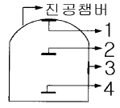
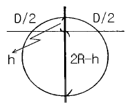
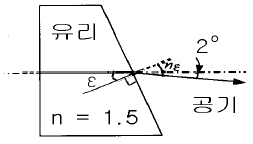
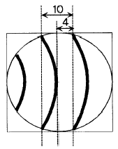
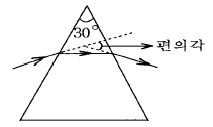
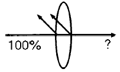
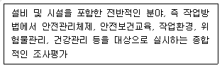

광학기능사 (2003-03-30 기출문제)
1과목: 광학일반
1. 간섭계의 종류와 그 응용에 관한 연결이 가장 부적절한 것은?
- Fabry-Perot 간섭계 : 분광기
- Michelson-Morley 간섭계 : 박막두께 측정
- Twyman-Green 간섭계 : 렌즈면의 검사
- 회전 Sagnac 간섭계 : 자이로스코프
(정답률: 알수없음)

2. 가시영역에서 유리물질의 정상분산(normal dispersion)에 관한 설명중 가장 부적합한 것은?
- 파장이 길어지면 굴절율은 감소한다.
- 굴절율이 감소하는 비율은 파장이 증가하면 작아진다.
- 동일한 파장에서 굴절율이 큰 물질은 파장의 변화에 따른 굴절율의 변화율도 크다.
- 한 유리물질의 분산곡선에 적당한 비율을 곱하면 다른 유리 물질의 굴절율 분산곡선을 구할 수 있다.
(정답률: 알수없음)
3. 원시인 사람이 100cm이내 물체를 또렷이 보지 못한다면 이 사람이 25cm에 있는 물체를 잘볼 수 있도록 하기 위해 서 필요한 교정렌즈는 몇 디옵터이어야 하는가?
- 1.0
- 2.0
- 3.0
- 5.0
(정답률: 알수없음)
4. 프라운호퍼 d선의 굴절율이 1.5, F선의 굴절율이 1.5⑤, C선의 굴절율이 1.495인 광학유리의 분산상수(아베 상수)는?
- 10
- 45
- 50
- 55
(정답률: 알수없음)
5. 다음 중 빛의 회절을 이용한 것은?
- 격자분광기
- 프리즘분광기
- 통신용 광섬유
- 액정표시장치(LCD)
(정답률: 알수없음)
6. 다음 중 사람의 눈이 느끼는 빛의 세기인 광원의 광출력을 나타내는 단위는?
- 와트(Watt, W)
- 루멘(lumen, lm)
- 룩스(lux)
- 칸델라(candela, cd)
(정답률: 알수없음)
7. 물 속에서 공기중으로 나오는 빛의 입사각(θ)이 얼마일 때 표면에서 전반사가 일어나는가? (단, 물의 굴절율은 1.33으로 한다.)
- tanθ = 1.33
- cosθ = 0.33
- sinθ = 1/1.33
- cosθ = (1/1.33)2
(정답률: 알수없음)
8. 평면의 편평도를 검사하기에 가장 적절한 검사기기는?
- 뉴턴 고리 간섭계
- 기준면과 경사면을 이용한 피조우 간섭계
- 사냑 간섭계
- 이중 슬릿 간섭계
(정답률: 알수없음)
9. 볼록렌즈를 사용하여 평행광을 초점에 모으려 한다. 이때 초점의 크기가 어느 크기 이하로 줄어들지 않는 근본 원인은?
- 적외선과 자외선이 통과되기 때문이다.
- 빛이 여러 파장으로 구성되어 있기 때문이다.
- 빛의 회절에 의한 한계이다.
- 렌즈를 통과한 빛과 주변광이 간섭하기 때문이다.
(정답률: 알수없음)
10. 광원의 온도에 따라 나오는 빛의 대표 색이 변한다. 다음 중 가장 고온의 열원에서 나오는 색은?
- 연청색
- 노랑색
- 붉은색
- 오렌지색
(정답률: 알수없음)
11. 빛을 측정하는 검출기중 가장 감응도가 좋은 것은?
- 열 검출기
- 광전 증배관
- 광전도 검출기
- 광기전력 검출기
(정답률: 알수없음)
12. 볼록거울에 의해 맺어지는 상의 설명으로 틀린 것은?
- 항상 직립 상이 맺어진다.
- 배율이 1보다 작다.
- 물체의 위치에 따라 실상 또는 허상을 맺는다.
- 넓은 시야를 볼 수 있다.
(정답률: 알수없음)
13. 프리즘을 통과하는 태양광선의 분산에 관한 설명 중 틀린 것은?
- 빨강이 파랑보다 작게 꺾인다.
- 빨강이 보라보다 속도가 빠르다.
- 빨강이 보라보다 굴절률이 크다.
- 빨강이 보라보다 진동수가 작다.
(정답률: 알수없음)
14. 다음 내용 중 틀린 것은?
- V값(Abbe number)이 클수록 분산이 작다.
- 프린트 유리는 분산이 크다.
- 크라운 유리는 V값이 크다.
- 고굴절 렌즈일수록 분산이 크다.
(정답률: 알수없음)
15. 매질 내에서 빛의 속도가 진공 속 속도의 2/3가 되었다. 이 매질의 굴절률은 얼마인가?
- 3/2
- 2/3
- 4/3
- 2
(정답률: 알수없음)
2과목: 광학가공
16. 깊이 60㎝의 물 속에 잠겨있는 물체를 공기 중에서 보았을 때 이 물체는 얼마나 깊이 있는 것처럼 보이는가? (단, 물의 굴절률은 4/3, 공기의 굴절률은 1로 가정)
- 45㎝
- 55㎝
- 70㎝
- 80㎝
(정답률: 알수없음)
17. 굴절률이 2인 매질에서 공기(굴절률 1) 중으로 빛이 입사한다. 전반사되는 임계각은 얼마인가?
- 30°
- 45°
- 60°
- 90°
(정답률: 알수없음)
18. 홀로그램을 재생할 때, 기록한 필름의 절반을 가렸다. 다음 중 형성된 홀로그램 상에 대하여 바르게 기술한 것은?
- 상이 반쪽만 나타난다.
- 상이 나타나지 않는다.
- 상이 흐려진다.
- 상에 변화가 없다.
(정답률: 알수없음)
19. 세기가 I인 자연광이 완벽한 선형 편광자를 통과하면 그 세기는 어떻게 달라지는가?
- I/4가 된다.
- I/3가 된다.
- I/2가 된다.
- 변하지 않는다.
(정답률: 알수없음)
20. -2diopter인 안경을 착용한 사람의 원점은 얼마인가?
- 25㎝
- 50㎝
- 75㎝
- 100㎝
(정답률: 알수없음)
21. 렌즈의 수차로서 일정한 파장의 단색광을 사용했을 때에 나타나는 수차가 아닌 것은?
- 구면수차
- 코마(coma)수차
- 비점수차
- 색수차
(정답률: 알수없음)
22. 다음 중 빛의 진행 방향을 90° 또는 180° 변환시키기 위해 사용되는 것은?
- 렌즈
- 프리즘
- 필터
- 반사경
(정답률: 알수없음)
23. 키가 170㎝인 사람이 거울을 보기에 제일 좋은 위치에 서서 자기 온몸을 볼 수 있는 최소 거울의 크기는?
- 35㎝
- 85㎝
- 1⑤㎝
- 140㎝
(정답률: 알수없음)
24. 사람의 눈으로 사물의 원근을 판단하는데 필요한 것은?
- 오른쪽 눈
- 시각
- 광각
- 왼쪽 눈
(정답률: 알수없음)
25. 눈에서 빛의 굴절이 일어나는 부위는?
- 홍채
- 수정체
- 동공
- 모양체
(정답률: 알수없음)
26. 렌즈의 곡률을 기준원기를 사용하여 측정할 때 원기와 렌즈의 중앙부에 틈새가 있는 경우를 설명한 것 중 맞는 것은?
- 가운데를 누르면 간섭무늬가 중앙을 향하여 모인다.
- 간섭무늬가 타원일수록 제품의 곡률이 정확하게 가공된 것이다.
- 간섭무늬의 색상은 바깥쪽은 적색이고 안쪽은 파란색이다.
- 간섭무늬는 많이 생길수록 기준 원기와 제품의 곡률이 일치한 것이다.
(정답률: 알수없음)
27. 초자 가공시 정연삭용 입자로서 구비해야 할 조건이 아닌 것은?
- 표면이 젖기 쉬울 것
- 용융점이 가공물보다 낮을 것
- 가공하는 재료보다 경도가 강할 것
- 연삭의 힘에 의하여 변형이나 파손을 일으키지 않을 것
(정답률: 알수없음)
28. 렌즈의 성형가공(CG)을 설명한 것으로 맞는 것은?
- 연삭면 표면거칠기는 다이아몬드 휠의 입자가 클수록 미세하다.
- 연삭면 표면거칠기는 연삭속도가 빠를수록 미세하다.
- 연삭면 표면거칠기는 연삭압이 클수록 미세하다.
- 연삭면 표면거칠기는 절입 깊이가 클수록 미세하다.
(정답률: 알수없음)
29. 렌즈 또는 프리즘의 성형가공에 사용되는 공구의 재질은?
- 초경합금 공구
- 다이아몬드 공구
- 고속도강 공구
- 세라믹 공구
(정답률: 알수없음)
30. 렌즈의 접합(발삼)을 하는 목적으로 가장 맞은 것은?
- 렌즈의 수차 제거
- 렌즈의 투과율 증대
- 렌즈의 강도 증대
- 렌즈의 무게 증대
(정답률: 알수없음)
3과목: 광학기기
31. 독일 DIN 3140에 표현된 연마기호 중 가장 정밀한 연마면의 기호는?
- ∨∨
- ∨∨∨
- ◇◇
- ◇◇◇
(정답률: 알수없음)
32. 반사막 제작을 위한 금속시료 증착시 올바른 환경이 아닌 것은?
- 증착 온도는 약 300℃ 정도로 고온이다.
- 증착하는 동안의 압력은 10-6Torr 정도로 한다.
- 금속시료의 증착속도는 1-2초로 짧게 한다.
- 금속시료의 순도는 99.9%이상이어야 한다.
(정답률: 알수없음)
33. 그림은 진공 챔버의 내부도이다. 증착할 렌즈가 놓이는 부분은 일반적으로 어느 곳인가?

- 1
- 2
- 3
- 4
(정답률: 알수없음)
34. 직경이 20mm인 Ring spherometer를 사용하여 구면렌즈를 측정한 결과 눈금의 변화(높이)가 1mm였다. 렌즈의 곡률 반경은?

- 45.5 mm
- 50.5 mm
- 55.5 mm
- 60.5 mm
(정답률: 알수없음)
35. 그림에서 한쪽 면이 기울어진 굴절률 1.5인 유리판을 통과한 빛이 광축에서 2° 벗어났다면 기울어진 각도(ε)는?

- 1°
- 2°
- 3°
- 4°
(정답률: 알수없음)
36. 반사형 간섭계를 사용하여 거울의 형상을 측정할 경우 다음과 같은 간섭무늬를 얻었다면 거울의 형상오차의 크기는? (단, 광원의 파장은 0.6㎛)

- 0.12㎛
- 0.24㎛
- 0.48㎛
- 0.60㎛
(정답률: 알수없음)
37. 다음 항목 중 Rayleigh 기준에 의한 렌즈의 한계분해능을 나타내는 것과 직접 관련없는 것은?
- 광원의 파장
- 유효 직경
- 초점길이
- 렌즈 마운트의 종류
(정답률: 알수없음)
38. 복사기에 대한 설명 중 틀린 것은?
- 복사하는 면 전체가 동시에 헤드 드럼에 결상된다.
- 확대 배율이 조정되는 것은 줌렌즈가 있기 때문이다.
- 거울을 쓰는 것은 광 경로를 꺾어서 복사기의 크기를 작게 만들려는 것이다.
- 뚜껑 안쪽면이 흰색인 것은 복사하는 배경색을 흰색으로 하기 위한 것이다.
(정답률: 알수없음)
39. OHP(over head projector)의 하단에 있는 프레넬 렌즈의 역할은?
- 상의 확대
- 상의 축소
- 광의 집광
- 광의 확산
(정답률: 알수없음)
40. 가정에 쓰는 수동 카메라를 이용하여 날아가는 총알을 촬영하려 한다. 다음 중 가장 적절한 촬영방법은? (단, 총알의 속도는 약 1km/s이고, 카메라의 촬영 면적은 10cm2 이다.)
- 플래쉬 램프가 장착된 수동카메라로 총알이 촬영영역에 들어오면 셔터를 누른다.
- 수동카메라를 B 셔터로 열어 놓고 총알이 촬영영역에 들어오면 플래쉬 램프를 터트린다.
- 백열등을 강하게 조명하고 총알이 촬영영역에 들어오면 가장 빠른 속도의 셔터를 누른다.
- 백열등을 강하게 조명하고 수동카메라를 B 셔터로 열어 놓는다.
(정답률: 알수없음)
41. 다음중 광섬유에서 신호가 멀리 전달되는 원리에 해당되는 것은?
- 빛의 전반사
- 빛의 투과
- 빛의 굴절
- 빛의 분산
(정답률: 알수없음)
42. 프리즘의 꼭지각이 30°, 최소 편의각이 18° 이다. 이 프리즘의 굴절률은?

- 1.37
- 1.43
- 1.51
- 1.57
(정답률: 알수없음)
43. 코팅하지 않은 렌즈(굴절률 1.5)에 수직으로 입사한 광의 경우 투과율은 몇 ％인가? (단, 흡수는 고려하지 않음)

- 90％
- 92％
- 94％
- 96％
(정답률: 알수없음)
44. 사진기 렌즈에서 색광의 파장에 따라 굴절각이 다르고 초점을 달리하여 흐린 상을 만드는 렌즈의 결함을 무엇이라 하는가?
- 색수차
- 구면수차
- Coma
- 비점수차
(정답률: 알수없음)
45. 일반적인 가시광선 파장의 범위는?
- 200㎚ - 500㎚
- 300㎚ - 600㎚
- 400㎚ - 700㎚
- 500㎚ - 800㎚
(정답률: 알수없음)
4과목: 질관리와 산업안전
46. 사진기에서 다음의 노출조건중 서로 같지 않은 노출량은?
- 조리개 F11, 셔터속도 1/125초
- 조리개 F8, 셔터속도 1/250초
- 조리개 F5.6, 셔터속도 1/500초
- 조리개 F2.8, 셔터속도 1/1000초
(정답률: 알수없음)
47. 플라스틱 렌즈의 진공증착시 표면처리 장점으로 다음 중 맞지 않는 것은?
- 내마모성 향상
- 반사 방지
- 투과율 높임
- 내충격성 향상
(정답률: 알수없음)
48. 투명한 유리를 잘게 부수어 가루로 하면 흰 설탕같이 보인다. 이 현상은?
- 전반사
- 난반사
- 굴절
- 간섭
(정답률: 알수없음)
49. 아포크로마틱 렌즈(apochromatic lens)제조에 사용되는 광학 결정은?
- 암염(NaCl)
- 불화 마그네슘(MgF2)
- 형석(CaF2)
- 수정(SiO2)
(정답률: 알수없음)
50. 대물렌즈의 초점거리가 500mm, 접안렌즈의 초점거리가 20mm인 천체 망원경의 배율은 몇 배인가? (단, 상이 도립인가 정립인가의 여부는 고려하지 않는다.)
- 10배
- 15배
- 20배
- 25배
(정답률: 알수없음)
51. 어느 공장의 월평균 종업원수는 500명, 년 작업시간수는 10만시간이고 재해건수가 2건, 작업손실 일수가 50일이라면 이 공장의 도수율은?
- 0.02
- 4
- 20
- 500
(정답률: 알수없음)
52. 다음 중 작업환경관리를 필요로 하는 유해요인 중에서 물리학적인 요인이라 볼 수 없는 것은?
- 유기용제
- 방사선
- 고온
- 이상기압
(정답률: 알수없음)
53. 다음 중 생산공정이나 작업방법의 개선으로 유해물질의 발산을 방지하는 방법으로 틀린 것은?
- 분말상으로 출하하고 있던 염료원료를 슬러지나 습식케이크 상으로 출하
- 유기용제를 사용한 분무도장을 분체도장 등으로 개선
- 분체이송시 벨트콘베어나 바스켓콘베어에 적재하는 것을 뉴마틱 콘베어를 이용
- 습식연마 작업을 건식연마 작업으로 개선
(정답률: 알수없음)
54. 사고와 재해와의 관련을 명백히 하기 위해 하인리히가 발표했던 중상재해의 연계성 법칙의 비율은?
- 1 : 5 : 500
- 1 : 29 : 300
- 1 : 30 : 290
- 1 : 10 : 100
(정답률: 알수없음)
55. 공정관리란 제조공정의 목적을 달성하기 위한 활동을 말한다. 다음 제조공정의 목적 가운데 가장 부적절한 것은?
- 설계에 표시된 품질표준에 맞는 제품 제조
- 가급적 많은 수량 제조
- 결정된 납기까지 제조
- 가장 경제적으로 제조
(정답률: 알수없음)
56. 어떤 제품을 평가할 때 계량치와 관능치로 구분한다. 다음 중 성격이 다른 데이터는?
- 길이
- 시간
- 온도
- 맛
(정답률: 알수없음)
57. 다음 설명에 해당되는 용어는?

- 안전진단
- 안전점검
- 안전확인
- 안전검사
(정답률: 알수없음)
58. 산업안전보건법상 사업주가 생산직 근로자에 대하여 실시하여야 할 일반건강진단 실시 주기는?
- 1년 1회이상
- 2년 1회이상
- 3년 1회이상
- 6월 1회이상
(정답률: 알수없음)
59. 유해한 먼지(분진)가 다량 발생되는 작업시 착용해야 하는 보호구는?
- 귀마개
- 방진마스크
- 송기마스크
- 안전모
(정답률: 알수없음)
60. 다음 중 화재종류에 따른 적용소화기를 올바르게 짝지은 것은?
- A급 화재 : 유류에 의한 화재
- B급 화재 : 금속에 의한 화재
- C급 화재 : 전기에 의한 화재
- D급 화재 : 일반화재
(정답률: 알수없음)